开始使用 / 快速开始
从首次登录到第一个任务
安装与启动
需要 Python 3.12+、Git 和 uv 。从公开仓库下载并启动：
git clone https://github.com/WuYuewy/Personal-Harness.git
cd Personal-Harness
uv sync --locked --extra ui
uv run personal-harness init
uv run personal-harness ui
如果本机存在失效的 Python 安装或注册项，可在 uv sync 后追加 --python 并指定一个有效的 Python 3.12+ 可执行文件；不要依赖旧项目的虚拟环境路径。
打开 http://127.0.0.1:8000 。首次登录的用户名为 local，密码由你现场设置，至少 8 位。以后用相同密码登录。首次只绑定本机地址；共享到其他设备前，先在本机完成密码设置。
Agent 首次打开默认使用明亮模式；你可以在界面菜单中切换主题，选择会保留在当前浏览器中。
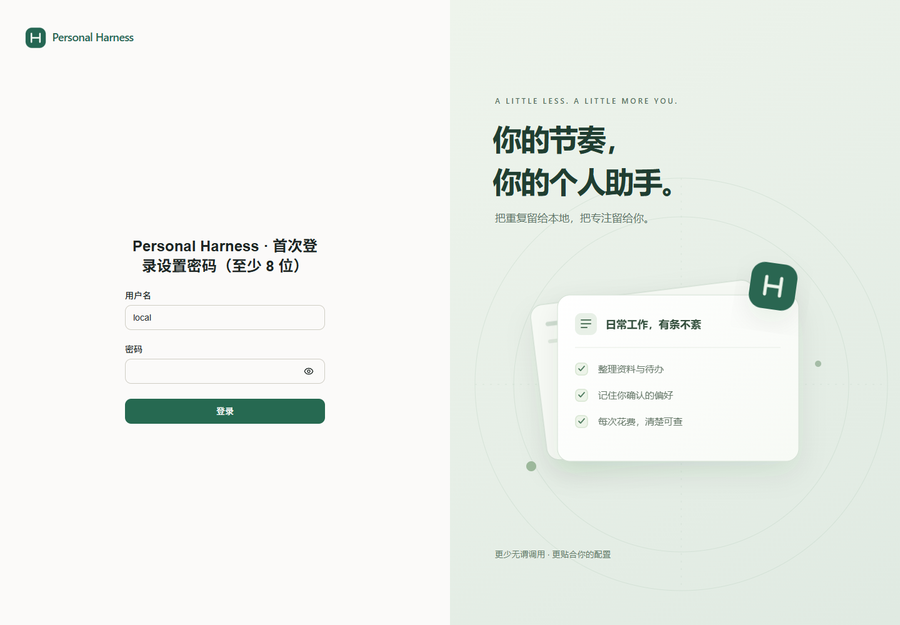
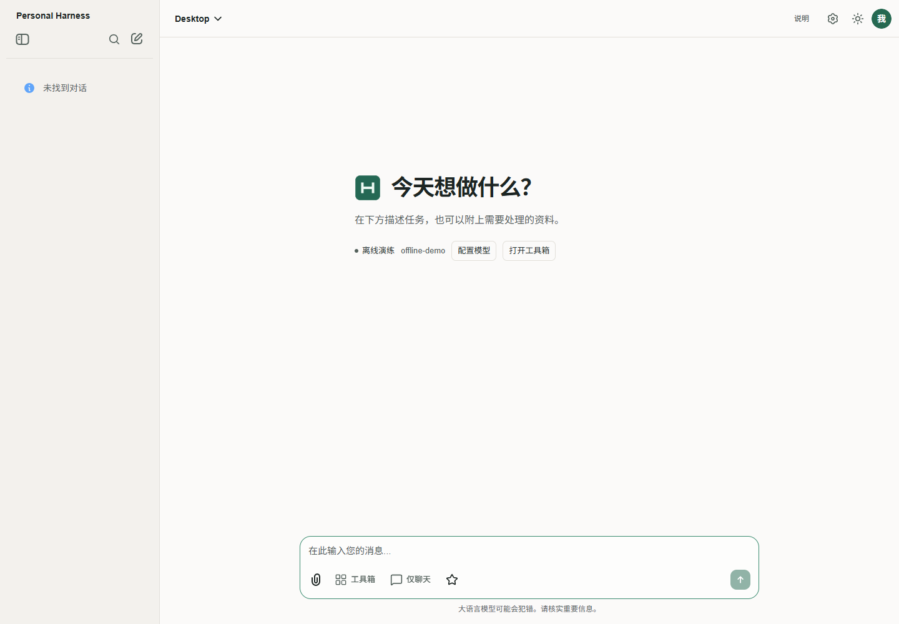
配置文件 personal-harness.toml、聊天数据库和上传文件都留在运行目录，不属于应提交的源码。
连接你自己的模型
点击欢迎卡中的「配置模型」，或发送 /models。填写连接名称、API Base URL（通常以 /v1 结尾）、模型 ID、API Key、上下文上限、单次输出上限，以及输入和输出价格。
价格单位为 元 / 百万 Token 。缓存命中价格可以留空，此时使用普通输入价。请核实服务商价格；账本按你填写的价格计算，不代表服务商最终账单。没有内置供应商、模型列表或可用密钥。
点击「保存并选择连接」。保存本身不调用模型，Key 输入框随后清空。输入 /test-model 发送一次真实的最小请求；该请求也计入预算。
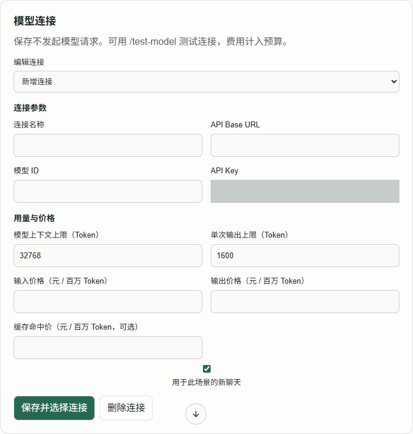
上图是首次打开的实际空白表单。连接名称由你命名；API 地址、模型和价格均按服务商说明填写，项目没有机构专用的填参按钮。
第一个真实任务
直接输入「请用三点说明怎样安排一次项目周会」，或上传自己的文本/PDF，再输入 /chat 请总结附件中的主要结论。后一种只提供聊天和附件，不开放工具。
等待时可展开执行进度；模型完成后显示回复和费用收据。可选 SSE 流式输出在设置 → 费用与上下文开启，需要服务商返回标准用量。
第一个文件任务
在设置 → 个人助手设置一个专用工作目录。在「工具」授权 workspace.list、workspace.search、workspace.read、workspace.write_preview、workspace.write。保存后再打开设置，选择下一轮实际要用的工具。
在该目录创建 notes.md：
预算：3000 元
已支出：1200 元
TODO: 林同学周五提交检索模块
TODO: 周同学周四提交权限模块
输入「读取 notes.md，生成一份带来源的项目简报，写到 brief.md」。检查完整正文和差异，点击 Apply write 才会落盘；Reject 拒绝写入。模型行为依赖所选模型的工具调用能力。
下次打开
侧栏恢复原聊天；新建聊天开始独立上下文。模型连接可设为当前场景的新聊天默认值，/save-defaults 保存其他场景设置。账号级助手偏好自动应用于该账号所有聊天。
接下来可跟随综合任务演示 ，用公开示例资料完成本地核账、在线多文件分析、写入审批、下载和个人方案复用。
Personal Harness · 0.1.0 · Apache-2.0 开始使用 / 综合任务演示
综合任务演示：筹备一次社区读书会
这是一次在发布副本 UI 中实际执行的任务：先在本地核对已支出费用，再让在线模型综合三份资料、处理时间冲突，生成可审批的文件；随后上传 PDF、确认长期偏好，并把固定清单保存为不调用模型的个人方案。
全部人名、资料和地点均为虚构示例。截图来自实际明亮模式界面；灰色遮挡用于隐藏测试连接或本机路径，不代表产品字段默认值。图片可点击放大。
1. 准备一个干净工作区
先完成首次登录和连接模型 。在项目根目录执行：
uv run python examples/community-workshop/prepare_demo.py --dest ../my-personal-workshop
脚本只复制输入文件，不复制参考产物，也不会覆盖已有目录。在设置 →「个人助手」把工作区设为脚本输出的绝对路径。设置 →「我的助手」可填写称呼，例如「小林」。
在「工具」中授权 workspace.read_many、workspace.write_preview、workspace.write。点击确认，等待保存完成后重新打开设置，把这三个工具加入「下一轮实际使用的工具」（界面字段 Tools for next task）。本地 CSV、搜索和待办功能还需授权 workspace.read、workspace.search 等相应只读工具。
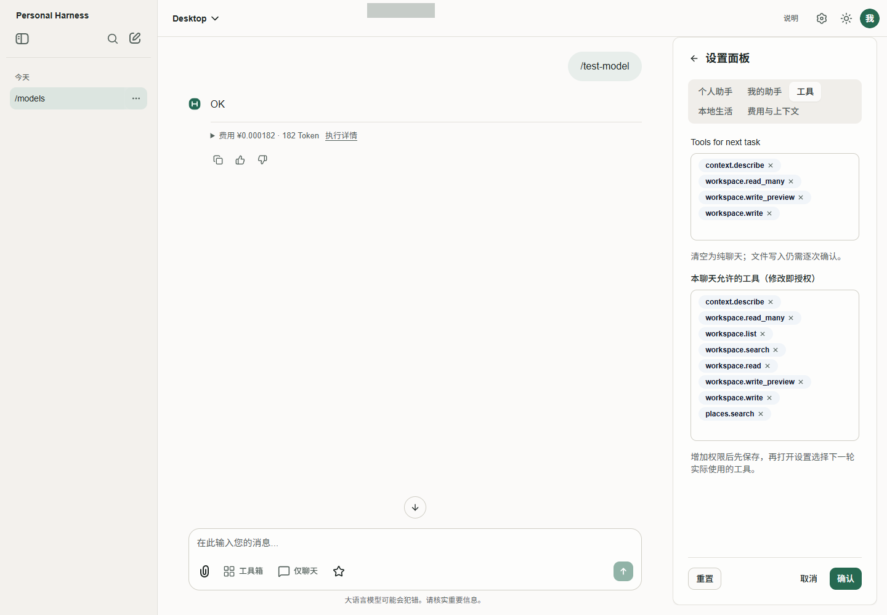
授权决定可以做什么；下一轮选择决定本次把哪些工具交给模型。写入授权并不替代每次文件审批。
2. 先用本地工具核对支出
在聊天中输入：
/sum expenses.csv amount
结果应为 3 条、合计 900.00 元 。这是确定性 CSV 汇总，不调用模型；可保存为自己的快捷查询，下次运行会重新读取当前文件。
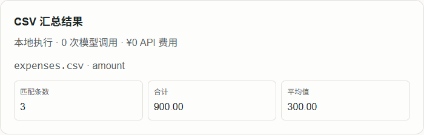
3. 让 Agent 综合资料并生成简报
正常发送以下消息，不要加 /chat 。/chat 表示本轮只聊天，不给模型工作区工具；附件任务可以用它，工作区读取和写入任务不能用它。
请实际批量读取 planning.md、expenses.csv、updates.md，为社区读书会生成中文 Markdown 执行简报，写到 workshop-brief.md。
需要：核算总预算、已支出、必须追加支出后的余额，以及可选宣传的超支缺口；使用最新变更覆盖旧时间；列出12人、雨天安排、三位负责人的待办和明确日期；门卡保管人缺失就标待确认。
每项标注来源文件。先结论后清单，不要猜测未给信息。请调用文件工具提交写入审批，不要仅在聊天贴正文。
等待时可展开原生折叠步骤，查看模型请求、读取和写入预览等执行状态。需要写入时，Agent 展示完整拟写正文和差异。
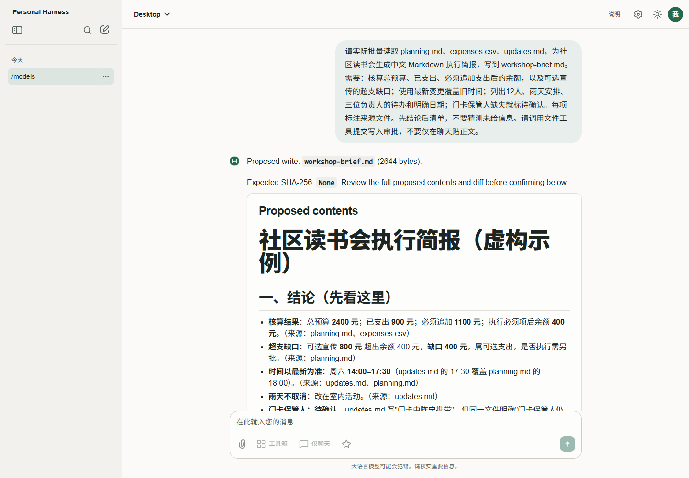
4. 审阅、批准与下载
重点核对以下事实，再点击 Apply write ：
核对点
正确结果
已支出
450 + 250 + 200 = 900 元
必须支出后的余额
2400 − 900 − 600 − 500 = 400 元
若追加宣传
再支付 800 元，超预算 400 元
时间冲突
采用 updates.md 的 17:30 ，覆盖 planning.md 的旧时间 18:00
人数与雨天
12 人；雨天转室内，不取消
待办
林同学周五、周同学周四、陈宁周六 13:30
缺失信息
门卡保管人仍标为待确认
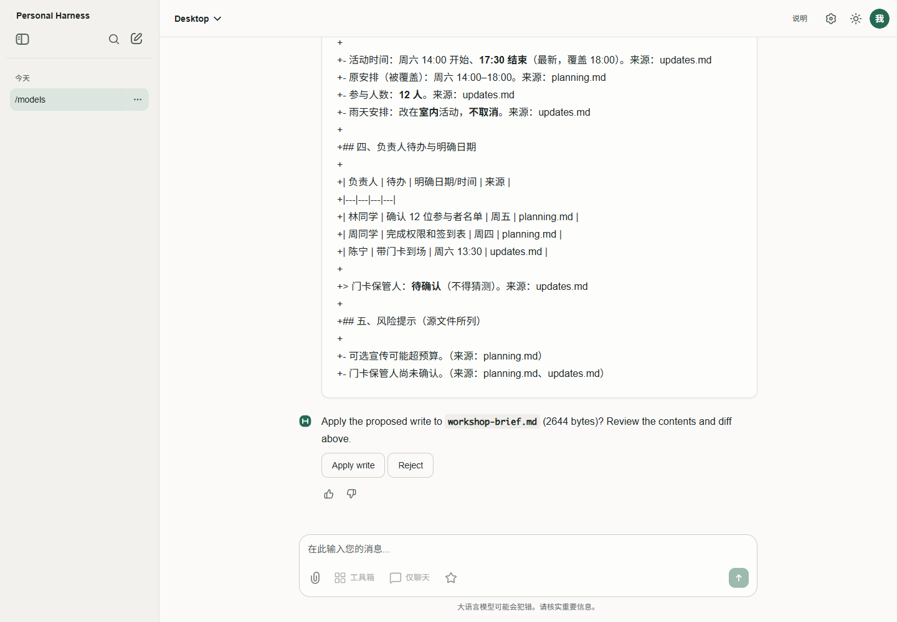
批准前目标文件不存在；批准后才生成 workshop-brief.md。如果不满意可点 Reject ，修改要求后重新生成。预览之后文件发生变化时，必须重新预览，不能沿用旧批准。
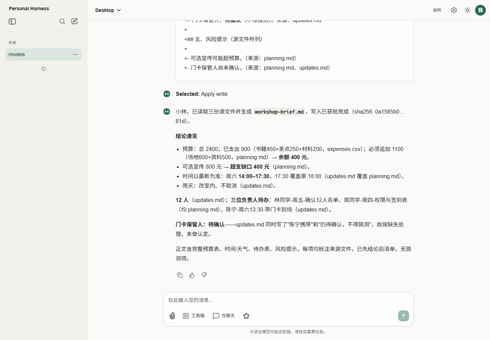
本次多文件任务实际完成 4 次模型请求，按接口 usage 与测试连接价格计量为 ¥0.0151056 ；费用包括生成、工具往返和批准后的最终回复。金额只代表此次运行，不是不同供应商或任务的统一报价。
输入 /download workshop-brief.md 下载。你可以对照这次实际产物 查看；这是参考结果，不是固定模板，不同模型措辞可能不同。/export 还可以导出聊天 Markdown。
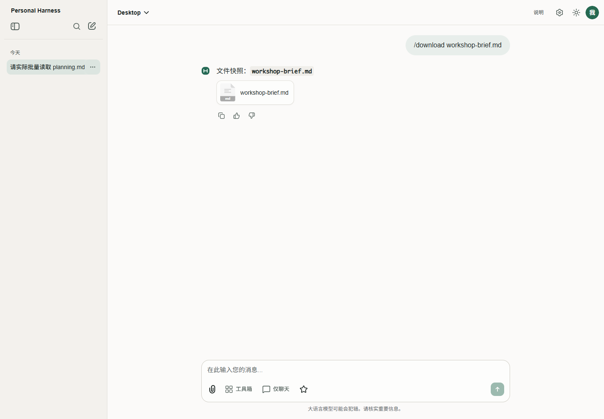
5. 继续上传 PDF，并保留连续上下文
把 venue-guide.pdf 拖进聊天或点击回形针上传，再发送：
/chat 我习惯每周五整理周报。请根据4页PDF用中文确认人数、开始与结束时间、雨天安排、陈宁到场时间，以及仍待确认的负责人；叫我的称呼，分点回答。
应提到 12 人、14:00–17:30、雨天室内、陈宁 13:30 和待确认的门卡保管人。PDF 先在本机提取文字；这里没有开放额外工具。侧栏可新建其他聊天，再切回原聊天查看附件和记录。
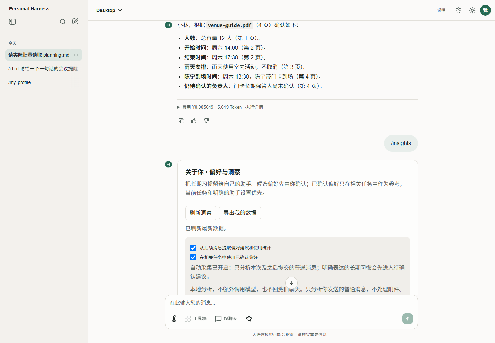
6. 让重复步骤不再消耗模型
发送 /reports，建立「读书会检查清单」：
来源文件（每行一个）：
planning.md
updates.md
章节配置（每行一个）：
筹备待办 | TODO:
风险 | RISK:
输出文件：workshop-checklist.md
保存后点击「读取当前资料并预览」，核对原文及来源行号，最后点击「确认写入」。以后资料中的 TODO 或 RISK 更新，直接重新运行该方案即可。这个步骤本机完成、0 次模型请求；它只分组原文，不承担自由语义摘要。
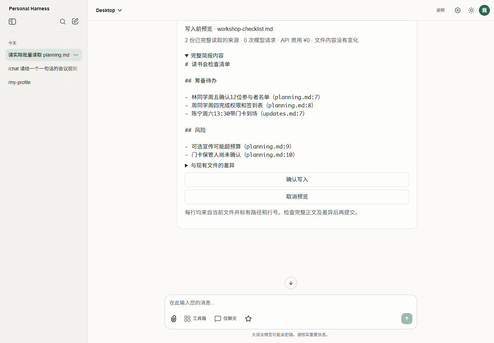
7. 保存使用习惯，查看这轮成本
如需采集使用习惯，先在 /insights 开启「从后续消息提取偏好建议和使用统计」，再发送明确的长期偏好。上面的「每周五整理周报」会成为待确认建议；点击「确认采用」后才用于后续适配。关闭自动采集也能手动添加、编辑和删除偏好。
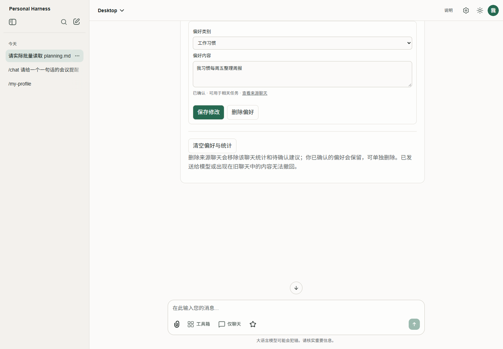
每个在线任务下方都有费用收据，展开可查看模型请求和工具执行；/usage 看本聊天记录，/budget 看剩余额度。本地汇总、个人方案、场景和偏好维护不发模型请求。这里展示的是减少不必要的调用，不把模型供应商的缓存折扣计作 Harness 的贡献。
这次演示验证了金额、冲突处理、来源、审批前后文件状态和下载内容。它不能证明所有模型都会成功；遇到工具协议或网络问题，请保留错误收据，先检查设置，避免盲目重跑。
Personal Harness · 0.1.0 · Apache-2.0 开始使用 / 聊天与附件
聊天、附件与执行进度
多聊天与连续上下文
侧栏支持新建、搜索、重命名、删除和切换聊天。默认携带最近 12 轮、总计最多 48000 UTF-8 字节的完整历史轮次；展示历史与发送给模型的上下文是两回事。
用 /context 查看上下文范围；/clear 清除后续模型上下文但保留界面记录；/export 下载 Markdown 聊天。删除聊天也会移除该聊天的统计和待确认偏好，已确认的长期偏好需单独删除。
文本与 PDF
支持 UTF-8 文本、代码、JSON、CSV 和可提取文字的 PDF。单次最多 5 个附件、每个上传上限 100 MB；本地单文件与批量读取默认上限 100 MiB。PDF 先在本地抽取文字再发给模型，不支持扫描件 OCR、图片理解或保真表格重建。
附件内容不自动进入工作区。文件足够小可以完整上传，不代表模型能接受全部文字；上下文容量、输出预算和网关限制仍然适用。上一轮附件超过当前历史容量时，系统会先让你选择取消调高容量，或仅用本轮内容继续，避免悄悄丢失资料。
图中资料为公开的虚构演示，完整流程见综合任务演示 。上传附件用回形针；侧栏切换历史不会把另一聊天的附件混入当前对话。
等待、流式回复与停止
运行状态以原生折叠步骤显示准备上下文、等待模型、执行工具和完成。步骤默认收起，可按需查看；它展示执行状态，不公开模型隐藏推理。停止按钮取消活动任务并关闭客户端，正在等待审批的变更不会执行。
流式回复可在设置开启；如果供应商未返回可信 usage，费用保留为未知。备用模型升级与流式回复不同时使用。
模型管理
/models 新增、编辑、删除连接；/test-model 验证当前选择。删除正在使用的连接后不会悄悄改用另一模型，需要你重新选择。模型参数与权限可按聊天保存，账号级体验偏好保持一致。
Personal Harness · 0.1.0 · Apache-2.0 日常工作 / 工作区与本地任务
电脑 cowork 与本地任务
授权范围
工作区路径由你显式设置。文件工具检查路径边界、符号链接、文件类型和大小；写入可额外限制到已有的输出子目录。不提供通用 Shell，也不会执行模型生成的命令。
工具分为「本聊天允许的工具」和「下一轮实际使用的工具」。增加前者就是授权；后者只能在已授权范围内选择。更改工具选择不必重建整个 Agent。
修改授权后先点击确认，等待设置面板关闭再重开，选择下一轮实际使用的工具。普通消息可以调用所选工具；/chat 会禁用本轮工具。
检索、读取和修改
先搜索相关文件，再按行读取，比把整个目录灌给模型更可控。批量读取可启用 workspace.read_many；只读工具并发可设为 1–16。工具返回分页正文和下一页位置，模型需按任务继续读取，截断不会伪装成完整结果。
workspace.write、workspace.replace_text 最终都需要预览和审批。写入使用文件指纹校验，预览之后源文件或目标发生变化会拒绝落盘；重新生成预览再批准。
不需要模型的任务
以下命令在本机执行，API 费用为零，仍检查权限和当前文件：
命令
用途
/find 关键词本地搜索工作区文本
/lookup expenses.csv id INV-1CSV 按列精确查找
/sum expenses.csv amountCSV 精确合计、均值、条数
/actions notes.md TODO:提取明确行首标记，保留行号
/files查看授权目录
/download brief.md下载允许的文本产物
工具箱提供相应表单，可命名保存快捷查询。下次点击会重新读取当前资料，不直接复用过期答案。
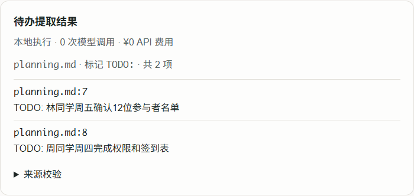
个人任务方案
/reports 打开方案库。配置来源路径、输出路径，以及「章节标题 | 精确行前缀」。可先从来源识别可用标记，再保存并预览。
例如把 TODO: 和 RISK: 原文分组生成每周简报：读取、整理和预览都无需模型，点击「确认写入」后才落盘。它适合结构明确的重复任务；不承担语义摘要或改写。每次运行会复查源文件和目标指纹。
完整的资料、提示词、审批截图和实际产物见综合任务演示 。
Personal Harness · 0.1.0 · Apache-2.0 日常工作 / 你的个性化助手
让助手适应你
三层个性化
层次
配置内容
生效范围
账号级「我的助手」
称呼、语气、详略、回答格式、澄清习惯、主动性、来源、成本取舍、补充偏好
账号的所有聊天
个人场景
工作区、工具授权、模型、预算、快捷查询、基础 profile
该场景的新聊天
用户偏好记忆
你确认的长期习惯、常用工具、关注主题、约束
相关任务的有界上下文
当前任务与明确的助手设置优先。记忆不改变权限和预算，也不会自动替你配置外部服务。
查看与修改
设置 →「我的助手」保存账号偏好。/my-profile 查看有效配置。/scenes 从当前聊天创建个人场景，支持复制、改名、归档和恢复。/save-defaults 更新当前场景的后续聊天默认值。
归档不会删除历史，已归档场景不能新开任务；删除模型连接需要重新选择可用连接。设备变化不会扩大工具权限。
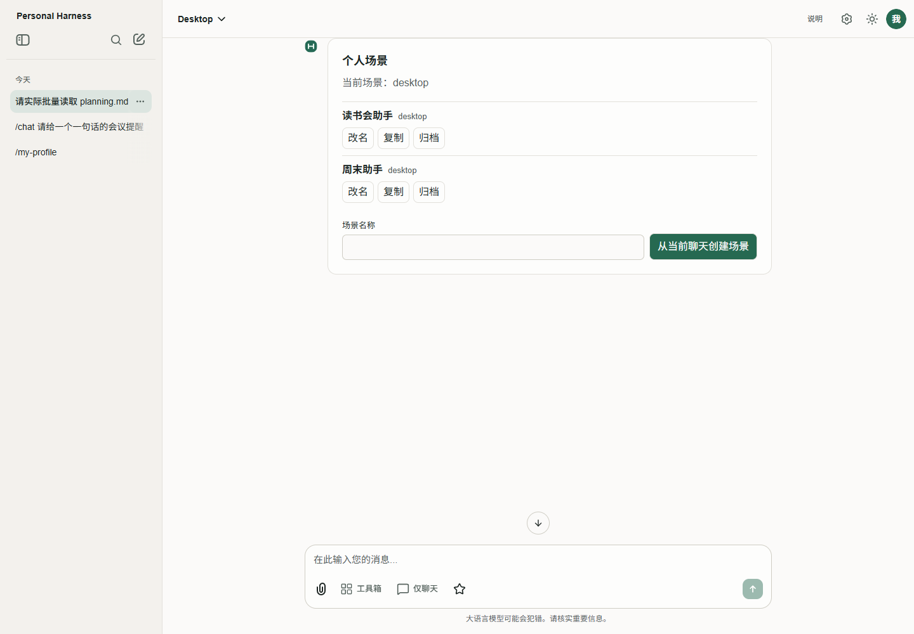
偏好与洞察
/insights 手动添加长期偏好，或开启「从后续消息提取偏好建议和使用统计」。默认关闭自动采集，开启后只分析后续普通用户消息，不回溯历史，不分析附件或工具结果。
例如「我习惯每周五整理周报」会成为待确认建议。只有点击「确认采用」才作为后续参考。临时任务、引用和包含敏感信息的文本不会随意变成长效偏好。分析使用本地规则和 jieba，不增加模型调用。
「使用画像」展示已确认偏好维度、任务分类、关键词和日期频次。这里是实际计数，不是人格评分。可查看计数、导出、编辑、删除或清空。
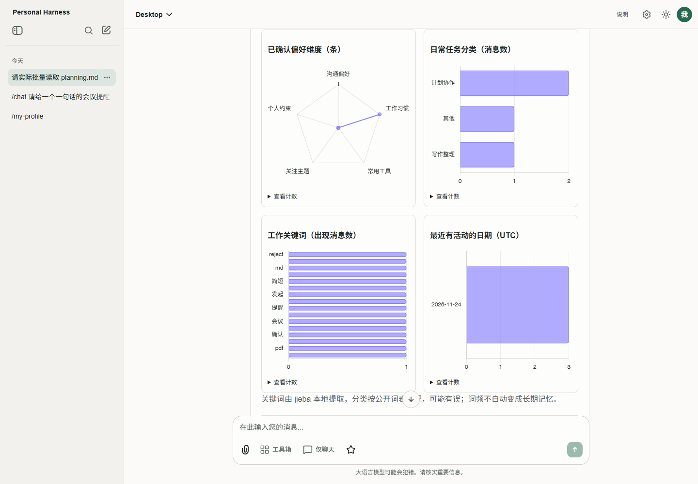
截图中的数据来自短时验收演示，不是长期使用效果或人格评估。
定向适配
电脑场景强调项目工作区、来源和书面产物；手机场景强调简短回答、结构化地点条件和本地筛选。它们复用同一个 SDK，主要差异来自你的配置。城市只是可选查询条件，不能代表整个个性化方案。
Personal Harness · 0.1.0 · Apache-2.0 日常工作 / 手机与本地生活
手机与本地生活
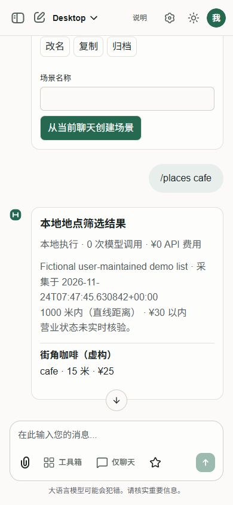
图中按用户配置的价格上限筛选，本机完成、0 次模型请求。它没有接入实时地图，地点营业状态需要另行核实。
手机入口
手机浏览器访问电脑上的同一 UI 服务，聊天、配置和账本在电脑端保存。先在本机设置登录密码，再绑定合适的局域网地址；默认只监听 127.0.0.1。不含手机原生客户端或手机本地模型运行。
uv run personal-harness ui --host 0.0.0.0 --port 8000
只在信任的网络运行；跨公网需要你自行部署 HTTPS、访问控制和反向代理。本项目的本地密码登录不是多租户托管平台。
地点数据由你控制
在设置 → 本地生活中填写自己维护的 JSON 数据文件、确认的 WGS84 位置、距离、价格和有效期。为聊天授权 places.search 后，可用 /places cafe 或工具箱本地筛选。
{
"schema_version": 1,
"source": "我的地点清单",
"fetched_at": "2026-11-24T08:00:00Z",
"city": "示例城市",
"places": [{
"id": "cafe-1", "name": "街角咖啡", "category": "cafe",
"latitude": 31.2305, "longitude": 121.4738,
"price_cny": "25", "open_status": "unknown"
}]
}
数据时间应是实际采集时间。只进行直线距离、价格和类别过滤，保留来源时间；过期、未来时间和未知营业状态都会标示。设置价格上限时排除价格未知的地点。
能力边界
不内置实时地图供应商，不自动获取 GPS，不保证营业状态，不提供导航、订餐或支付。用户维护的数据可真实使用，但不等于联网搜索。需要解释和比较时，在线 Agent 可以调用同一地点工具，再生成文字建议；简单筛选可以完全不调用模型。
Personal Harness · 0.1.0 · Apache-2.0 理解 Harness / 省钱机制与账本
Harness 如何省钱
先看结果，再看费用
只有满足同一任务验收条件时，减少的调用和 Token 才有意义。不能只比较一次便宜的失败运行；重试、升级、失败开销都计入同一账本。首版提供具体机制和可核验记录，不承诺任何统一的节省比例。
Harness 自己完成的优化
机制
具体实现
用户如何看见
限制
本地直达
CSV、待办、搜索、地点筛选绕过模型
结果写明 0 次模型请求、¥0 API 费用
只做确定性运算
个人任务方案
按用户定义前缀生成可审批简报
运行次数、来源、零请求收据
不进行语义改写
按需工具与上下文
限制本轮工具、可选 task 上下文模式
设置、运行工具和上下文记录
不保证每次更便宜
文件结果分页
只返回配置范围的片段，标示续读位置
可展开工具结果
模型可能需要多次读取
历史文件引用
较早的大文件正文替换成来源引用
收据中的省略字节数与上下文状态
必要时需重新读取
预算与循环约束
每次发送前占用额度，限制步骤、工具调用和重试
/budget、逐请求账本保守预留可能阻止实际上便宜的请求
有限升级
用户显式配置，只有 length 截断升级一次
两个模型的费用都累计
不是自动质量评分器
历史文件引用默认跟随成本偏好：省钱优先使用 references，平衡和质量优先保留 full；用户可覆盖。引用模式仅精简符合条件的较早大文件读取，保留最近一轮和必要来源。完整会话在本地保留。
SDK 效率不是 Token 折扣
同一聊天复用 Agent、HTTP 客户端与有界读取缓存；文件工具可批量、只读可并发，减少构建开销和串行等待。缓存校验文件身份和变化，工具权限变化仍会重查。read_cache_bytes 默认 0，需自行开启。
这些可减少本地 IO 和延迟，不代表模型输入自动变少 。直接读取缓存与供应商 Prompt Cache 是不同机制。
不把供应商缓存算成自己的功劳
账本可以按你填写的缓存价格计算实际估算费用，单列缓存价差。该折扣来自供应商。本项目不把缓存命中带来的便宜记为 Harness 自身节省，也不从省略字节数伪造节省金额。
计费、预留与未知
在线费用为可信 usage × 用户价格，人民币 Decimal 计算。缺失或矛盾 usage、发送后断线等保留未知，阻止继续掩盖风险。明确未建连的失败记录为零；HTTP 429 本身不保证免费。
每次请求保守预留按模型完整上下文上限和输出上限计算。因此即使短任务实际只用几厘钱，也可能要求更大的可用预算。单轮、UTC 每日和可选累计上限共用本地账本。
用 ledger list 和 ledger show 查看记录。核实账单后才能 ledger reconcile --amount-cny ... --source ...；不把未知费用自动当零。请求前预留不是账单。
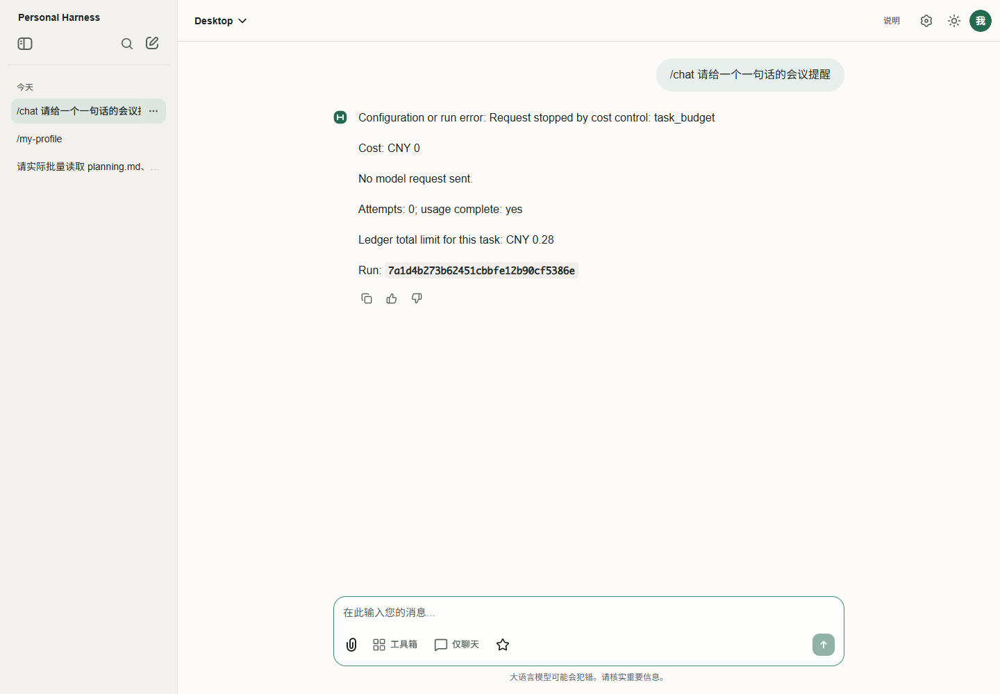
图中 task_budget 表示单轮上限阻止了请求，不是网关失联。daily_budget、total_budget 分别对应每日和累计可用额度；请同时检查三个上限。即使实际费用很低，扣除已有费用后的余额也必须容纳下一次保守预留。具体费用与本地零请求步骤可在综合任务演示 中对照。
Personal Harness · 0.1.0 · Apache-2.0 理解 Harness / 精简架构与 SDK 效率
精简的 SDK 与工程结构
只有三个主要入口
配置定义「你需要什么」，Agent 执行「这次做什么」，工具定义「允许做什么」。复用 PydanticAI 的 Agent、工具协议、消息与 OpenAI 兼容适配；复用 Chainlit 的认证、侧栏、设置和附件，不再建立一套通用多 Agent 编排框架。
TOML / UI 设置
↓ 校验、合并与权限选择
ResolvedConfig → Agent → PydanticAI → 用户配置的模型
↓ ↕
文件 / 本地工具 预算与 usage 账本
↓
变更预览 → 用户审批 → 文件
配置如何生效
TOML 先合并 base 与选定 profile，再应用显式 overrides；UI 在此基础上应用账号助手偏好、场景默认值和当前聊天设置。账号体验偏好对该账号保持一致，聊天工具不超过明确授权范围。
personal-harness config show --explain 给出有效配置和来源。密钥通过独立参数或本地环境读取，不进入配置导出、提示词或费用收据。
模块定位
源码
职责
config.py, context.py类型化配置、来源、任务上下文
runtime.py执行、恢复审批、资源生命周期
tools.py, workspace.py工具与文件边界
connections.py, openai_adapter.py通用连接与 usage 校验
metering.py, ledger.py, costs.py请求预留、费用结算与核账
history.py, conversation.py历史范围与文件正文精简
reports.py, csv_lookup.py, csv_summary.py本地确定性任务
chainlit_app.py, ui_features.py, ui_state.py可选 UI、状态和账号设置
user_insights.py, places.py本地偏好分析与地点过滤
UI 依赖放在可选 extra；不装 UI 仍可用 CLI 和 SDK。首版是单人、本地优先的完整小工具，不是分布式服务平台。
Personal Harness · 0.1.0 · Apache-2.0 开发与维护 / CLI 与 SDK
CLI 与 SDK
通用在线配置
UI 和 CLI 共用执行引擎，但 UI 的模型连接不会偷偷回写 TOML。CLI 用户可生成通用模板，然后填写自己的端点、模型、上下文和价格：
uv run personal-harness init --provider openai-compatible --config my-agent.toml
uv run personal-harness config validate -c my-agent.toml
uv run personal-harness doctor -c my-agent.toml
uv run personal-harness provider prices -c my-agent.toml
uv run personal-harness budget -c my-agent.toml
uv run personal-harness run "总结 notes.md" -c my-agent.toml
模板里的 api.example.com 和 your-model-id 是无效示例，必须替换。Key 放在 OPENAI_API_KEY 或配置文件旁被忽略的 .env，不写进 TOML。实际联网还需安装 api 或 ui extra。
执行并审批
import asyncio
from personal_harness import Agent
async def main():
async with Agent.from_config("my-agent.toml") as agent:
result = await agent.run("读取 notes.md，生成 brief.md")
while result.status == "pending_approval":
decisions = {}
for approval in result.approvals:
print(approval.preview["diff"])
decisions[approval.call_id] = input("批准这次写入? [y/N] ") == "y"
result = await agent.resume(result.run_id, decisions)
print(result.output, result.total_cost)
asyncio.run(main())
审批绑定本次预览和文件身份。SDK 调用者负责把明确决定交给 resume；不要自动同意所有修改。
扩展自己的工具
from pydantic_ai import RunContext
from personal_harness.context import RunDependencies
async def user_greeting(ctx: RunContext[RunDependencies], name: str) -> str:
"""Generate a local greeting without network calls."""
return f"Hello, {name}"
把 user.greeting 加入工具授权，构造 Agent(resolved, tools=[user_greeting])。使用 PydanticAI 原生工具类型，不需要继承自建 Tool 基类。涉及外部付费接口的工具应先通过 ctx.deps.external_costs.reserve 预留，再 settle 实际费用；未经计量的服务不应宣称包含在账本内。
连续会话与错误
UI 自动管理上下文；SDK 调用者可将 result.messages 追加到自己的历史，再传 message_history。用上下文管理器关闭连接。RunError 携带原因、运行 ID 和可用费用信息，超时不应导致应用把已经发送的请求记为免费。
Personal Harness · 0.1.0 · Apache-2.0 开发与维护 / 常见问题与边界
常见问题与功能边界
转圈很久或请求失败
展开执行进度。请求与任务有独立超时；可在设置提高请求超时和总任务时间，但重试会占用预算。网关限流、不可用、工具调用协议不完整都可能导致失败，应用不能保证外部服务永远可用。
出现费用未知时先核对供应商账单再核账；错误收据保留请求，不自动重发整个任务。只在明确尚未建立连接时自动记零。
PDF 或附件太大
上传、本地读取、历史容量、模型上下文是四个独立限制。提高本地读取上限不会扩大模型上下文。PDF 文字过多时先分段或提取需要的章节；扫描 PDF 需要先自行 OCR。
预算充足但请求被拦截
预算预留是保守上界，并非对短请求的实际费用预测。查看 /budget 中的每请求预留、剩余额度和未知费用。正确填写模型官方上下文上限与价格，不要为了绕过预检虚报参数。
偏好没有自动更新
自动采集默认关闭；在 /insights 开启后，只分析后续普通消息中的明确长期偏好。建议需要你确认；使用画像不等于长期记忆。账号级「我的助手」则在设置保存时直接生效。
版本边界
只支持文本型 OpenAI Chat Completions 兼容接口；不保证所有第三方协议兼容。支持正常回复和可选 SSE，用量缺失有明确处理。
工作区只操作文本文件；不提供任意 Shell、浏览器代理、Office 自动化或后台任务调度。
本地生活使用用户提供的数据；无实时地图、导航、订餐或支付。
首版针对个人本地运行；无托管多用户服务、SSO、移动原生应用或同步云。
节省与成功率取决于任务和模型；本版验收展示具体场景，不代表长期或普遍的节省保证。
Personal Harness · 0.1.0 · Apache-2.0 开发与维护 / 数据与发布
数据、维护与发布
数据在哪里
个人 TOML 旁的 .personal-harness/ 保存 UI 数据库、费用账本和附件；Chainlit 还会生成 .chainlit/、public/、.files/ 等运行文件。它们不是开源源码。模型 Key 在本机数据库独立存储，不进入模型提示或连接列表导出；这不等于操作系统级密钥保险库，应保护本机账号和磁盘。
备份与恢复
停止 UI 后执行：
uv run personal-harness data backup my-backup --config personal-harness.toml
uv run personal-harness ui --config my-backup/personal-harness.toml
备份目录自身可作为恢复后的运行目录，也可先复制到新的私人目录。具体参数以 data backup --help 为准。备份包含历史与附件等私人数据，不得公开。备份会剔除 API 凭据、密码和 JWT；恢复后重新设置登录密码与模型 Key。费用账本随数据恢复，不自动清零。
从源码检查
uv sync --locked --extra ui --dev
uv run ruff check .
uv run ruff format --check .
uv run mypy
uv run --extra ui pytest
uv run python scripts/build_docs.py --check
uv build
uv run python scripts/smoke_wheel.py
uv run python scripts/smoke_wheel.py --ui
自动测试使用模拟传输，不调用真实模型。真实首次用户验收记录另见 0.1.0 验收记录 ，不在 CI 存放任何真实 Key。
在线文档与发布
在线使用文档 通过 GitHub Pages 托管，不需要读者在本机启动文档服务。项目仓库 提供源码、Issue 和贡献入口，Releases 提供版本包与 SHA256 校验文件。源码使用 Apache-2.0 许可证；尚未发布到 PyPI，请使用源码或 Release 中的 wheel。
文档源文件在 docs/*.md，截图和演示下载位于 docs/site/。修改后运行 uv run python scripts/build_docs.py，将 Markdown 与生成的静态站一同提交。.github/workflows/pages.yml 在 main 更新时校验并部署 docs/site/；仓库 Settings → Pages 的 Source 选择 GitHub Actions 。站点使用相对资源与 hash 路由，支持项目站点的子路径。
维护时可用 uv run python scripts/serve_docs.py 预览尚未提交的修改；对外入口始终是上述在线文档。部署方式见 GitHub Pages 官方说明 。
发布新版本前运行 uv run python scripts/audit_release.py 检查 Git 索引中的私人路径与疑似凭据；未初始化 Git 的干净副本使用 --tree .。检查 CI、LICENSE、README、构建包与 SHA256 后，再创建版本标签和 Release。不要提交个人配置、运行数据库、凭据或备份。
贡献请保持最小改动、类型校验、权限边界和可重复测试。供应商差异通过通用连接参数处理，避免引入特定部署默认配置。
可重复的浏览器冒烟
uv run --with playwright playwright install chromium
uv run --extra ui --with playwright python scripts/browser_smoke.py
也可用 --browser 指定本机 Chromium 或 Edge。脚本在临时目录首次登录，实际点击快捷查询、切换聊天、修改资料、编辑/删除快捷项，并验证手机布局和零模型调用。不会使用真实密钥或任何机构的部署配置。
Personal Harness · 0.1.0 · Apache-2.0